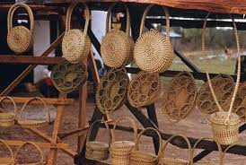

Long before factories existed, people created baskets, containers, mats, and decorative products using natural materials around them. What started as a necessity became an art form and today basketry products are sold around the world. Basketry combines creativity, craftsmanship, culture, and entrepreneurship.
Basketry is the art and craft of weaving natural or synthetic materials into useful and decorative products. It develops creativity, design skills, patience, and practical production abilities.
Many students think Basketry is only a traditional craft. In reality, basketry products are sold internationally and are used in interior decoration, tourism, fashion, gifting, and creative industries. A simple basket can become a premium product when creativity and quality are added.
This is only a small introduction. If you want to understand how programmes connect to university courses, careers, opportunities, and future success, get a copy of:
The guide designed to help students make informed decisions about their future and discover opportunities they may never have considered.